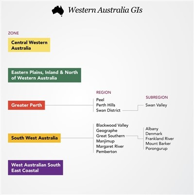

Only around 2% of Australian Wine
The Coastal region is bounded by Geographe Bay and the Indian and Southern Oceans. Most revered. Chardonnay, Cabernet Sauvignon and Sauvignon Blanc Semillon blends
Came about thanks to scientific planning rather than by accident. Thanks to Dr John Gladstones. Gladstones proposed 6 unofficial subzones (all based on drainage direction, which corresponded to air flow directions)
Coastal zones, N to S: Yallingup, Wilyabrup, Wallcliffe, Karridale. Carbunup in Geographe bay, east of Cape Naturaliste in Yallingup, and then Treeton is an inland region, with the warmest summer temps but greatest Diurnal.
Wilyabrup is the home of the region (home to 3 of the main 5 producers: Vasse Felix, Cullen, Moss wood)
Leeuwin Estate and Cape Mentelle (other 2 of 5) in Wallcliffe. Wallcliffe is a cooler region that follows the course of the Margaret River as it goes west to the Indian ocean.
Blackwood river flows south to the southern ocean in Karridale, where they make some of the best Sauvignon Blanc.
Margaret River is, with Coonawarra, one of the premier sources of Cabernet Sauvignon in Australia.
Mediterranean climate. Cabernet from the red gravelly loam soils of the Wilyabrup is the star. Ripe, yet moderate in weight. Bright acidity, dark berry, savory bay leaf herbal flavors, and red capsicum notes.
Wallcliffe is more austere and herbal. (region does well with Chardonnay) Gingin clone of chardonnay here. (named for a town north of perth, known as mendoza elsewhere) Sauvignon Blanc & semillon are big here too.
So yeah, margaret river, super good. The other region that Gladstones said would be great, Great Southern GI, is still struggling.
Still, it has 5 official subregions
Albany: western australia’s oldest permanent settlement. Coastal more promising for Pinot Noir and Chardonnay. Porongurup and Mount BArker more Riesling Shiraz (weather turns more continental) Mount Barker, most established region, home to pioneers: forest hill vineyard and Plantagenet.
Overall, muh. Not much here...
85% of WA vines are in the South West Australia zone, between Margaret River and Great Southern.
Geographe GI is the 3rd largest app. And a newcomer too. Capel Vale is the most important producer today, was the 1st in 1974. Named after le Geographe, the vessel of French explorer Nicolas Baudin, who mapped the coastline in 1800.
4 areas: Donnybrook, Ferguson Valley, Harvey and the Capel-Busselton Coastline. Red focus: shiraz and Cabernet Sauvignon. SB and semillon gaining interest.
Residual GI's: Blackwood valley GI, Pemberton GI (good chard) Manjimup GI
Return to the main page